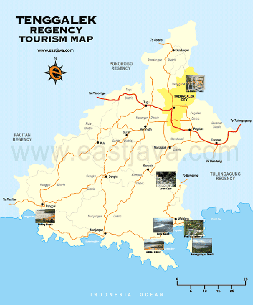

Hometown
About Trenggalek Regency
Trenggalek Regency (Indonesian: Kabupaten Trenggalek; Javanese: ꦏꦧꦸꦥꦠꦺꦤ꧀ꦠꦿꦼꦁꦒꦭꦺꦏ꧀) is a regency (kabupaten) in East Java Province of Indonesia.
The regency has an area of 1,261.40 km² and had a population of 674,411 residents at the 2010 Census, and 731,125 at the 2020 Census; the official estimate as of mid-2024 was 753,810. It is located on the southern shore of East Java and is surrounded by three regencies:
- Ponorogo Regency to the northwest;
- Pacitan Regency to the southwest;
- Tulungagung Regency to the east.
The administrative centre is located in the district (kecamatan) of Trenggalek.
Geographical boundaries of Trenggalek Regency:
- Northwest: Ponorogo Regency;
- Southwest: Pacitan Regency;
- East: Tulungagung Regency;
- South: Indian Ocean;
- North: Mount Wilis.

Trenggalek Map
Geographical location of Trenggalek Regency in East Java